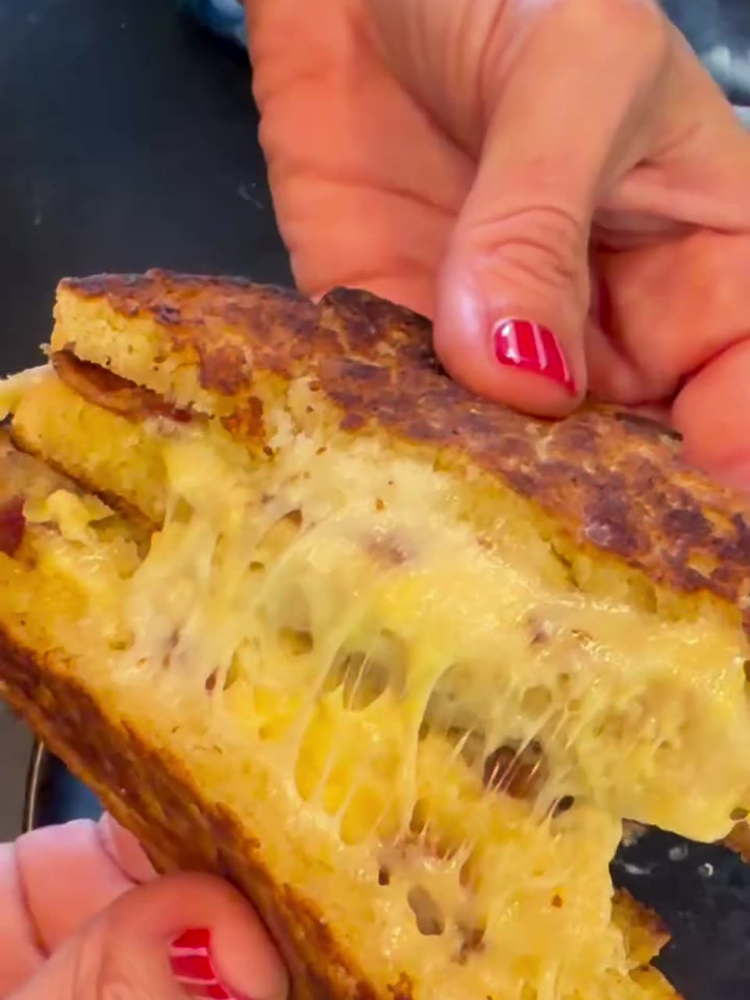

Honey bacon grilled cheese
Grilled cheese de Pan Blanco con gouda, mozzarella y tocineta extra crujiente, dorado lento en mantequilla y terminado con miel. Sin gluten.

Dos rebanadas de Pan Blanco, doraditas en mantequilla y rellenas de doble queso —gouda y mozzarella— con tocineta extra crujiente. Se tuesta lentamente, tapado, hasta que el pan queda perfectamente dorado y el queso se derrite en el centro. Y el toque que lo lleva a otro nivel: un drizzle de miel por encima.
Ingredientes
- 2 rebanadas de Pan Blanco True Food
- Queso gouda
- Queso mozzarella
- Tocineta crujiente
- Mantequilla
- Miel
Cómo se hace
- Unta mantequilla por la parte exterior de las dos rebanadas y, si quieres, también un poco por adentro.
- Arma el grilled cheese con el gouda, la tocineta crujiente y la mozzarella rallada.
- Cocina a fuego medio-bajo y tapa, para que el queso se derrita mientras el pan se dora lentamente.
- Cuando esté bien dorado y el queso completamente derretido, retira del fuego.
- Termina con un poquito de miel por encima.
Dónde conseguir el pan
El Pan Blanco está en los congeladores de tu súper: mira dónde comprar. Delicioso, saludable y Gluten Free.